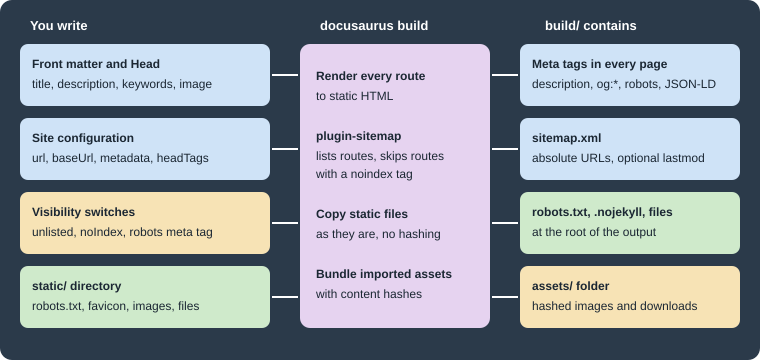

SEO and Static Assets
|
This content was generated with the assistance of AI and should be verified against the official documentation before being relied on in production. |
This page was written against Docusaurus 3.10.2 (the last release of the 3.x line) and checked on 2026-10-26. A
Docusaurus site is built into plain HTML, so search engines can read every page without running JavaScript; what is
left to the author is to say what each page is about, which pages should not appear in results, and which extra files
(a robots file, images, downloads) must be served as they are. The running example is the documentation site of Pocket
Units, the small units-conversion library with a C# and a Python implementation. Every configuration below was built
with Docusaurus 3.10.2 and the generated HTML and sitemap were inspected; no search engine was involved, so what a
crawler later does with the pages is not covered. The example site is served under the fictitious address
https://docs.pocket-units.example/pocket-units/.

The figure summarises the page. Metadata written in front matter, in the site configuration or in visibility switches
ends up as tags in the head of each HTML file and as entries in sitemap.xml. Everything in static/ is copied
without any processing.
Page metadata
Front matter fields
The docs, blog and pages plugins all read the same four front matter fields to build the head of a page:
| Field | Effect on the generated page |
|---|---|
|
The |
|
The |
|
The |
|
|
|
Not a meta tag, but it decides the URL of the page, which is the most visible SEO choice for a document. |
The Docusaurus documentation recommends putting description and keywords in the front matter instead of writing the
tags by hand, because one field then feeds both the standard and the Open Graph tags.
---
title: Converting lengths
description: How to convert metres to feet with Pocket Units.
keywords: [length, metres, feet]
---
Use `Units.Convert(1, "m", "ft")` in C# or `convert(1, "m", "ft")` in Python.Source: Docusaurus docs: SEO
The build of that page produced these tags (reformatted, one per line, and reduced to the ones set by the page):
<title data-rh=true>Converting lengths | Pocket Units</title>
<meta data-rh=true property=og:title content="Converting lengths | Pocket Units"/>
<meta data-rh=true name=description content="How to convert metres to feet with Pocket Units."/>
<meta data-rh=true property=og:description content="How to convert metres to feet with Pocket Units."/>
<meta data-rh=true name=keywords content=length,metres,feet />
<meta data-rh=true property=og:url content=https://docs.pocket-units.example/pocket-units/docs/guides/conversions />Output: the head of build/docs/guides/conversions.html.
A page without a front matter image receives the site-wide image set with themeConfig.image (the generated site
points it at img/docusaurus-social-card.jpg); the build above printed og:image and twitter:image with absolute
URLs for it. Replace that file with a card of your own, because the default shows the Docusaurus mascot.
Site-wide tags
Three configuration keys add tags to every page:
-
themeConfig.metadatais an array of{name, content}objects rendered as<meta>tags. Pocket Units uses it fortwitter:card; thekeywordsentry in the example below applies to every page that does not set its own. -
headTags(top-level) is an array of{tagName, attributes, innerHTML}objects inserted in the<head>of every page, forlink,metaandscriptelements that are not meta tags with a name. -
faviconis the path of the icon, relative tostatic/; the build renders it as<link rel=icon>with the base URL applied (href=/pocket-units/img/favicon.ico).
import type {Config} from '@docusaurus/types';
const config: Config = {
title: 'Pocket Units',
tagline: 'Unit conversion in your pocket',
favicon: 'img/favicon.ico',
url: 'https://docs.pocket-units.example',
baseUrl: '/pocket-units/',
trailingSlash: false,
headTags: [
{
tagName: 'script',
attributes: {type: 'application/ld+json'},
innerHTML: JSON.stringify({
'@context': 'https://schema.org',
'@type': 'SoftwareSourceCode',
name: 'Pocket Units',
programmingLanguage: ['C#', 'Python'],
}),
},
],
themeConfig: {
image: 'img/docusaurus-social-card.jpg',
metadata: [
{name: 'keywords', content: 'units, conversion, C#, Python'},
{name: 'twitter:card', content: 'summary_large_image'},
],
},
};
export default config;The JSON-LD script from headTags appeared in every page. The keywords meta from themeConfig.metadata appeared
only in pages without their own keywords front matter, so a page-level value replaces the site-wide one instead of
being added to it. The url and baseUrl values matter for SEO because Docusaurus builds every absolute URL
(og:url, og:image, sitemap entries) from them; with the wrong url the tags point at the wrong host.
Head tags from a page
In a Markdown or MDX document a <head> element puts tags in the head of that page only. In a React page use the
Head component from @docusaurus/Head. The next page adds structured data (JSON-LD) that describes the article:
import Head from '@docusaurus/Head';
<Head>
<script type="application/ld+json">{JSON.stringify({
'@context': 'https://schema.org',
'@type': 'TechArticle',
headline: 'Converting lengths',
})}</script>
</Head>Source: Docusaurus docs: SEO
The built page contained three JSON-LD scripts: the breadcrumb list that the docs plugin writes for every document, the
TechArticle above, and the SoftwareSourceCode from the site configuration. The site configuration one is not marked
with data-rh, because it is part of the HTML template rather than of the per-page head management. Because the head
tags of a page and of the layout are merged, avoid writing the same meta name twice; the documentation recommends
front matter to prevent that.
The official documentation also states that blog posts get rich-result information (publication date, authors, image)
automatically from their front matter, that the pages plugin and the docs plugin accept title, description,
keywords and image, and that with i18n enabled the build adds hreflang alternate links on its own. Those were
not exercised here; see the i18n page for the locale setup.
Keeping pages out of search results
There are four levels, from the whole site to one page. They are different mechanisms, so choose by what you want to hide and from whom.
| Mechanism | Effect in the build | Sitemap |
|---|---|---|
|
Every page receives |
No |
|
The page is built and reachable by URL but hidden from the sidebar, previous/next links and lists according to the documentation (only the page itself and its head were inspected); its head contains |
The page is left out. |
|
Only that page carries the tag; the sidebar and navigation still list it. |
The page is left out. |
|
The page is not built in production. |
Not applicable. |
The first three rows were built and inspected; the draft row is taken from the docs plugin documentation and was not
exercised. The example site contains one unlisted page and one page with the head tag, and neither appears in sitemap.xml. The
sitemap plugin recognises a page to leave out by looking for a robots noindex tag in what the page rendered, which is
why the hand-written head tag and the unlisted flag give the same result.
---
title: Page with a robots meta tag
description: Hidden from crawlers through a head tag.
---
<head>
<meta name="robots" content="noindex" />
</head>
This page asks crawlers not to index it, but it is still listed in the sidebar.Source: Docusaurus docs: SEO
A robots meta tag is a request to well-behaved crawlers, not an access control: the page is still public. Hosting
platforms that can add an X-Robots-Tag header offer an alternative to the meta tag, but the Docusaurus documentation
notes that GitHub Pages cannot. Content that must not be seen at all does not belong in the site.
The sitemap plugin
What it does
@docusaurus/plugin-sitemap is part of @docusaurus/preset-classic. After a production build it writes
sitemap.xml into the output directory, listing the URL of every route except the ones that carry a robots noindex
tag or match an ignore pattern. It does nothing in development (the preset only adds the plugin for production builds
or in debug mode) and it does nothing when the site uses the experimental hash router. URLs are made of url, the
route path and the global trailingSlash setting: with trailingSlash: true the entries became
https://docs.pocket-units.example/pocket-units/blog/, with false they carry no final slash. The plugin has no
trailingSlash option of its own and rejects one with an error that points to the global setting.
Without any option, the sitemap built from the example site contained entries of this shape:
<url><loc>https://docs.pocket-units.example/pocket-units/blog/</loc><changefreq>weekly</changefreq><priority>0.5</priority></url>Output: a line of build/sitemap.xml with trailingSlash: true and no sitemap options.
Options
| Option | Type | Default | Meaning |
|---|---|---|---|
|
string |
|
Output file, relative to the output directory. Useful when two instances of the plugin write different sitemaps. |
|
|
|
Adds |
|
a sitemap frequency or |
|
One of |
|
number from 0 to 1, or |
|
Written for every URL. |
|
array of globs |
empty |
Route paths to leave out. The patterns are matched against the full route path, base URL included. |
|
async function |
not set |
Receives |
The plugin source marks changefreq and priority as candidates for removal in Docusaurus 4, because the same value
for every route carries no information; set both to null to stop writing them. The old cacheTime option is
rejected: a build with sitemap: {cacheTime: 600} stopped with the message "Option cacheTime in sitemap config is
deprecated. Please remove it."
Configuring it through the preset
presets: [
[
'classic',
{
docs: {
sidebarPath: './sidebars.ts',
showLastUpdateTime: true,
},
sitemap: {
lastmod: 'date',
changefreq: null,
priority: null,
ignorePatterns: ['/pocket-units/blog/authors/**'],
filename: 'sitemap.xml',
createSitemapItems: async (params) => {
const {defaultCreateSitemapItems, ...rest} = params;
const items = await defaultCreateSitemapItems(rest);
return items.filter((item) => !item.url.includes('/markdown-page'));
},
},
},
],
],Source: Docusaurus docs: sitemap plugin
The build of the complete example succeeded and wrote four entries: the blog index, the two documents and the home
page. The author pages matched ignorePatterns and the Markdown page was removed by the filter. Pass sitemap: false
to the preset to omit the plugin altogether; the preset code does exactly that check. Outside the preset the plugin is
added to plugins as '@docusaurus/plugin-sitemap' with the same options object; that form was not built here.
Last modification dates
lastmod has two requirements that surprised during the build:
-
The date comes from the version control system, so the site must be inside a Git worktree. With
lastmod: 'date'in a directory that is not a Git repository the build failed with "This Docusaurus site is outside any Git worktree. Unable to read Git info for file …" and no site was written. -
Docs only provide a date when the docs plugin has
showLastUpdateTime: true. Without it the sitemap contained no<lastmod>at all. With the option on, the two documents received<lastmod>2026-10-26</lastmod>, while the blog and the Markdown page still had none.
In a CI job that makes a shallow clone the commit dates are wrong or missing, so check out the full history when you
enable lastmod.
robots.txt
Docusaurus does not generate a robots file; it is an ordinary file in static/, served from the root of the site.
That has a consequence for sites in a subdirectory: crawlers read robots.txt only at the root of the host, so with
baseUrl: '/pocket-units/' the copy in the output is reachable at /pocket-units/robots.txt and is useful only if
the host maps it to the root.
User-agent: *
Disallow: /internal/
Sitemap: https://docs.pocket-units.example/pocket-units/sitemap.xmlSource: Docusaurus docs: SEO
The file was copied unchanged to build/robots.txt. The Sitemap line is how a crawler learns where
sitemap.xml is, and it needs the full URL because Docusaurus does not rewrite the contents of static files. The
Docusaurus documentation points out that a robots file does not remove pages from results that are already linked
elsewhere; use the noindex tag for that, and keep in mind that a crawler blocked by robots.txt can never see the
noindex tag on the page.
Static assets
The static directory
Everything under static/ is copied into the root of the output with its folder structure. The example site has
these files:
static/
.nojekyll
robots.txt
files/units.csv
img/favicon.ico
img/docusaurus-social-card.jpg
img/pocket-units.svgThe build output contained .nojekyll, robots.txt, files/units.csv and img/pocket-units.svg at the same
relative paths, with the baseUrl as the only prefix on the web. Files in static/ are not hashed or minified, so a
changed file keeps its name and browsers or CDNs may serve a cached copy; put a version in the file name when that
matters.
The .nojekyll file belongs to GitHub Pages: Jekyll would otherwise discard files and folders that begin with an
underscore. The deployment page covers it with CNAME, which is
another file whose place is static/.
Other static directories
staticDirectories is an array of directories whose contents are copied unchanged to the output. The official page
does not state its default; a site without the key copied static/. List static again when you add other
directories, as below. A build with staticDirectories: ['public', 'static'] and a file
public/humans.txt produced build/humans.txt next to the files from static/.
import type {Config} from '@docusaurus/types';
const config: Config = {
title: 'Pocket Units',
url: 'https://docs.pocket-units.example',
baseUrl: '/pocket-units/',
staticDirectories: ['public', 'static'],
};
export default config;This is a trimmed file for illustration; the build above used the full configuration of the example site. If two directories contain the same path, the documentation does not specify which one wins, so avoid duplicates.
Referencing assets from content
How a file is referenced decides whether the build processes it:
-
In Markdown and MDX, a link or image whose path starts with
/is converted into an import. The build then checks that the file exists and puts it into the hashedassets/folder. In the example,[conversion table](/files/units.csv)became a link to/pocket-units/assets/files/units-<hash>.csv, and the imagewas small enough to be inlined as a base64 data URI in the page. -
In JSX or in raw HTML tags inside Markdown, paths are not rewritten. Import the file, or use
useBaseUrlfrom@docusaurus/useBaseUrl, so that thebaseUrlprefix is added. A hard-coded/img/logo.svgbreaks as soon as the site is served under a subpath. -
In CSS, absolute paths in
url()are resolved by the bundler.
import React from 'react';
import useBaseUrl from '@docusaurus/useBaseUrl';
export default function Logo(): React.JSX.Element {
return <img src={useBaseUrl('/img/pocket-units.svg')} alt="Pocket Units logo" width={64} height={64} />;
}Source: Docusaurus docs: Static assets
Because the files in static/ that you link by an absolute path from Markdown are checked by the build while the
ones referenced by hard-coded paths in JSX are not, a missing file is reported as a broken link only in the first case;
in the second it becomes a 404 for the reader. Always write alternative text for images: the Docusaurus SEO guide
treats it as the way to describe an image to search engines and assistive technology.
Pitfalls and version notes
-
Setting
noIndex: trueremoves the sitemap as well as asking crawlers to skip the pages. Use it for preview deployments, not for the production site. -
Giving a document the slug
/moves it away from/docs/intro; the generated footer and navbar still link to the old path, and withonBrokenLinks: 'throw'the build stopped with "Docusaurus found broken links!" until the links were updated. -
A
urlcopied from the configuration of a different site is the most common reason for wrongog:urland sitemap entries. The documentation examples are inconsistent about a trailing slash onurl; the build joined it correctly without one. -
lastmod,changefreqandpriorityare optional hints. The plugin source says that the last two are likely to be removed in Docusaurus 4. -
The examples use one locale. For a localized site the Docusaurus documentation describes
hreflanglinks; they were not built here.